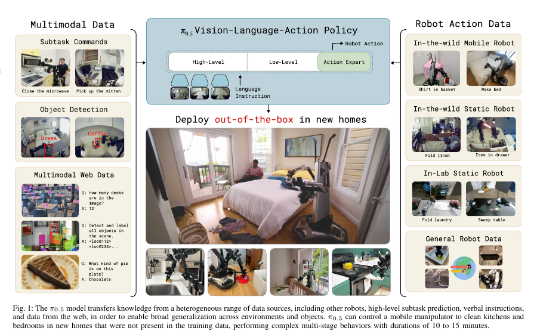

π0.5
A Vision-Language-Action Model with Open-World Generalization.
π0.5는 π0의 범용 manipulation policy를 한 단계 확장해, 학습에서 보지 못한 실제 집에서도 긴 시간 동안 정리 작업을 수행하는 것을 목표로 한다. 핵심은 로봇 demonstration의 양만 늘리는 것이 아니라, 서로 다른 종류의 지식 원천을 하나의 VLA에 co-train하는 학습 레시피다.
Problem
로봇이 실험실 밖의 새로운 집에서 일하려면?
새 주방을 청소하려면 물체를 집는 저수준 기술뿐 아니라, 무엇을 먼저 해야 하는지 판단하고, 낯선 배치와 물체의 의미를 이해하며, 긴 작업 순서를 이어 가야 한다. 가능한 모든 집과 상황의 robot data를 직접 모으는 방식만으로는 이 범위를 덮기 어렵다.
New environments
학습에 없던 집의 조명, 배경, 가구 배치, 물체를 마주해도 작업을 수행해야 한다.
Long-horizon tasks
주방·침실 정리는 수많은 하위 행동의 순서와 상태 변화를 다루며, 논문에서는 10~15분 길이의 작업을 다룬다.
Knowledge beyond direct experience
모바일 로봇이 직접 수행한 시연만으로는 부족하다. 다른 로봇, 웹의 시각·언어 지식, 사람의 구두 지시에서 transfer해야 한다.
Core Idea
서로 다른 경험을 같은 VLA 안에서 함께 학습한다
π0.5는 이미지·언어·object detection·고수준 subtask·저수준 행동을 모두 sequence modeling 문제로 표현한다. 이를 통해 robot action data뿐 아니라 web multimodal data와 verbal instruction도 policy의 학습 신호가 된다.

Other robot data
mobile robot이 아닌 static robot과 lab 환경의 action data도 저수준 manipulation prior로 사용한다.
Semantic and verbal supervision
“pick up the plate” 같은 subtask label과 사람이 단계별로 알려 주는 언어 지시를 high-level reasoning 학습에 사용한다.
Web multimodal data
captioning, VQA, object localization 같은 web data를 co-training해 장면과 물체의 의미 이해를 넓힌다.
Architecture
하나의 모델이 먼저 subtask를 생각하고, 다음 행동을 생성한다
π0.5는 두 단계 inference를 쓴다. 먼저 현재 장면과 고수준 목표에서 다음 semantic subtask를 예측하고, 이어서 그 subtask를 조건으로 continuous action chunk를 생성한다. 별도 planner와 controller를 붙이는 대신, 같은 VLA가 두 역할을 수행한다.
Pre-training: discrete tokens
다양한 web·robot·semantic data를 FAST action tokenizer와 함께 학습한다. 목표는 넓은 knowledge transfer다.
Post-training: continuous actions
mobile manipulation에 맞춰 flow matching action expert를 사용한다. 정교한 실시간 행동과 high-level subtask prediction을 함께 학습한다.
Inference: think, then act
“clean the kitchen” 같은 목표에서 먼저 “pick up the plate”를 추론하고, 그 다음 해당 행동의 저수준 action chunk를 생성한다.
Data Recipe
직접 경험보다 넓은 데이터 혼합
모바일 로봇이 다양한 실제 집에서 수집한 데이터는 약 400시간이지만, 첫 pre-training phase에서 이 직접 target-domain data의 비중은 작다. 논문은 첫 단계 학습 예시의 97.6%가 다른 로봇·웹·semantic data 같은 이질적 원천에서 왔다고 설명한다.
Co-training is the central claim
π0.5의 성능은 많은 mobile robot data 하나가 아니라, 서로 다른 정보 원천 간 transfer를 설계한 결과라는 것이 논문의 주장이다.
Hybrid examples
한 example 안에 image observation, object detection, subtask prediction, language command, low-level action을 조합해 high-level과 low-level을 연결한다.
Detailed Model Design
하나의 Transformer 안에서 text reasoning과 continuous control을 결합한다
π0.5는 사전학습 VLM을 하나의 공통 backbone으로 사용한다. image patch, task prompt, proprioceptive state, high-level subtask, action을 모두 token sequence로 표현하되, 각 modality는 자신에게 맞는 encoder와 expert weights를 쓴다. 따라서 web의 question answering과 robot control이 같은 모델 안에서 함께 학습될 수 있다.
Input sequence: observation + task prompt
입력 oₜ는 여러 camera image와 robot state로 구성되고, 전체 목표 ℓ은 “clean the kitchen” 같은 high-level prompt다. robot state는 discretize되어 text token처럼 입력되고, image는 vision encoder를 거쳐 soft token이 된다.
Pre-training: all outputs are discrete
첫 단계에서는 action도 FAST tokenizer의 discrete token으로 바꿔 standard autoregressive next-token prediction을 수행한다. 이 덕분에 web data, semantic label, 다른 robot action data를 효율적으로 대규모 co-training할 수 있다.
Post-training: a new continuous action expert
두 번째 단계에서 π0처럼 별도의 action expert를 추가한다. noisy continuous action chunk는 action expert가 처리하고, flow-matching vector field를 출력한다. 이 expert는 backbone보다 작으며, fine-grained action generation에만 전문화된다.
Hybrid objective preserves both abilities
post-training에서도 text next-token loss와 flow-matching loss를 함께 최적화한다. 그래서 subtask를 언어로 생각하는 능력을 잃지 않으면서, 50 Hz action chunk를 빠르게 생성할 수 있다.
Hierarchical factorization
모델은 먼저 현재 관측과 전체 목표에서 다음 subtask ℓ̂을 예측하고, 그 subtask를 조건으로 저수준 action chunk를 생성한다.
추론 시에는 autoregressive decoding으로 “pick up the plate” 같은 subtask를 먼저 얻고, 이어서 flow matching을 10회 적분해 연속 action을 만든다. 즉 text reasoning은 느린 high-level loop에서, motor control은 빠른 low-level loop에서 작동한다.
Results & Takeaway
Open-world generalization은 scale만의 문제가 아니다
π0.5는 학습하지 않은 새 집에서 주방과 침실을 정리하고, 물체를 서랍에 넣고, 침대를 정리하며, 수건을 걸고, 물건을 싱크대에 옮기는 긴 작업을 수행한다. 논문의 핵심 결과는 end-to-end VLA가 이질적인 data source를 잘 활용하면 새로운 환경에서도 긴 dexterous task를 수행할 수 있다는 점이다.
π0와의 차이
π0가 continuous action과 pre/post-training으로 정교한 범용 manipulation을 보였다면, π0.5는 heterogeneous co-training과 hierarchical subtask prediction으로 일반화 범위를 넓힌다.
가장 중요한 메시지
물리적 일반화에는 직접 robot experience뿐 아니라 web semantics, 다른 embodiment, 사람의 언어적 coaching을 policy가 함께 활용할 수 있어야 한다.
원문: π0.5: A Vision-Language-Action Model with Open-World Generalization ↗